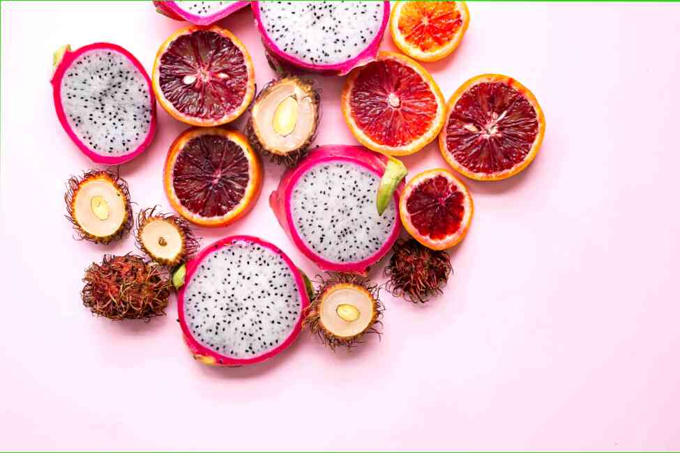

"È stato interessante, come in generale sembra che la tua dieta quotidiana", - mi ha scritto ieri una lettrice, e ho pensato: questo è un segno )). Da oggi e per una settimana voglio postare qui le cheto-piatti!
E, se possibile - ancora e raccontare come si è cucinato.
Perche'? In primo luogo, a qualcuno e in realtà vi aiuterà a saperne di più su come sembra tipico di keto dieta.
E in secondo luogo, e per me - una sorta di sfida, la possibilità di tirarsi su, prendere in mano, a ricordare vecchi calcoli KBZHU e questo è tutto)). Qualcosa di simile a "magia rosa", che a volte ognuno di noi.
Quindi: lunedì, 27 aprile.
Ore 10 del mattino, la colazione: tre uova strapazzate il mio preferito grasso "Bielorusso", con pomodorini ciliegia, prorostkami semi (che io coltivo da sola) e con la salsa di pomodoro fatta in casa. Era molto gustoso!
In questo piatto: 23,93 g di proteine, 40,95 g di grasso, 4,36 g di carboidrati e 488 chilocalorie.
15.45, il pranzo (lui stesso la cena): insalata di cavolo, pomodori ciliegia e piantine, condito con un cucchiaio di olio extravergine di oliva,
plus - due cotolette di pollo, fegato di manzo e di grasso, cotto nel sesamo.
A cavolo insalata - 147 kcal (13,79 - grasso, 5,57 carboidrati e 1,84 - proteine).
In polpette (ricetta di cucina è possibile trovare i sylke) - ancora 350 calorie. Il peso di due polpette - di 163 grammi, ecco il loro layout per KBZHU, e calcolare le proteine e i grassi - mi scusi, non forze)):
La sera a cena non ho più voglia. Forte della fame non è stato. È stato un leggero appetito, ma pacificare, quando circa 20.00 ho bevuto il tè con 1 cucchiaino di olio di cocco. Questa è un'54 chilocalorie.
Totale, diciamo: 488 + 147 + 350 + 54 = 1039 calorie ho naela per tutto il giorno.
Qualcuno sicuramente dirà che è molto poco. Ma dato che ora ho la maggior parte della giornata seduto a casa sul sedere (e risparmiando i grassi), secondo me è giusto. E più precisamente, il corpo stesso mi dice questo, perché se avessi avuto fame - mi piacerebbe, naturalmente, avrebbe raccolto. Beh, vediamo cosa sarà domani! ))
Con Amore, Il Vostro Pesce Rosso
Sono contenta se questo articolo vi sia stato utile! Non dimenticate di mettere "mi piace" e iscriviti al mio canale per seguire nuove pubblicazioni ;)
Lascia un commento